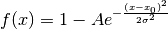
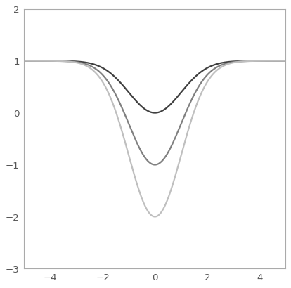

GaussianAbsorption1D¶
-
class
astropy.modeling.functional_models.GaussianAbsorption1D(*args, **kwargs)[source] [edit on github]¶ Bases:
astropy.modeling.functional_models.BaseGaussian1DDeprecated since version 2.0: The GaussianAbsorption1D class is deprecated and may be removed in a future version. Use Gaussian1D and subtract it off Const1D instead.
One dimensional Gaussian absorption line model.
Parameters: amplitude : float
Amplitude of the gaussian absorption.
mean : float
Mean of the gaussian.
stddev : float
Standard deviation of the gaussian.
See also
Notes
Model formula:

Examples
import numpy as np import matplotlib.pyplot as plt import warnings from astropy.modeling.models import GaussianAbsorption1D from astropy.utils.exceptions import AstropyDeprecationWarning plt.figure() with warnings.catch_warnings(): warnings.simplefilter('ignore', AstropyDeprecationWarning) s1 = GaussianAbsorption1D() r = np.arange(-5, 5, .01) for factor in range(1, 4): s1.amplitude = factor plt.plot(r, s1(r), color=str(0.25 * factor), lw=2) plt.axis([-5, 5, -3, 2]) plt.show()
Deprecated since version 2.0: The GaussianAbsorption1D class is deprecated and may be removed in a future version. Use Gaussian1D and subtract it off Const1D instead.
Initialize self. See help(type(self)) for accurate signature.
Attributes Summary
param_namesMethods Summary
evaluate(x, amplitude, mean, stddev)GaussianAbsorption1D model function. fit_deriv(x, amplitude, mean, stddev)GaussianAbsorption1D model function derivatives. Attributes Documentation
-
param_names= ('amplitude', 'mean', 'stddev')¶
Methods Documentation
-
static
evaluate(x, amplitude, mean, stddev)[source] [edit on github]¶ GaussianAbsorption1D model function.
-
static
fit_deriv(x, amplitude, mean, stddev)[source] [edit on github]¶ GaussianAbsorption1D model function derivatives.
-
{kind=link}
{kind=link}